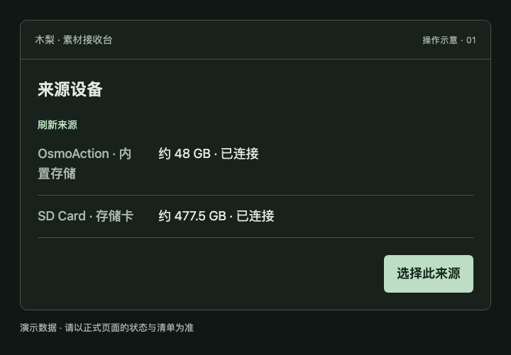
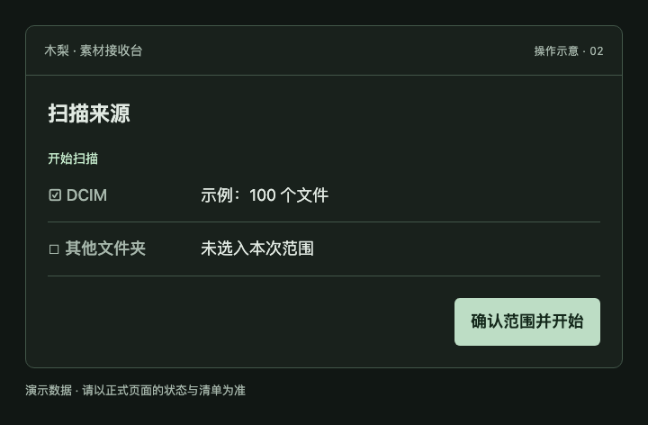
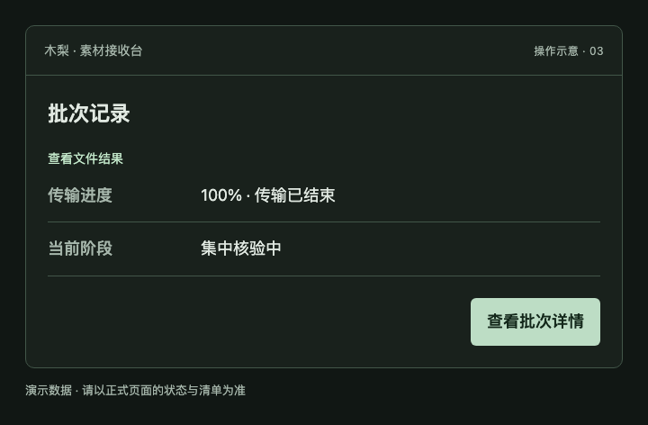
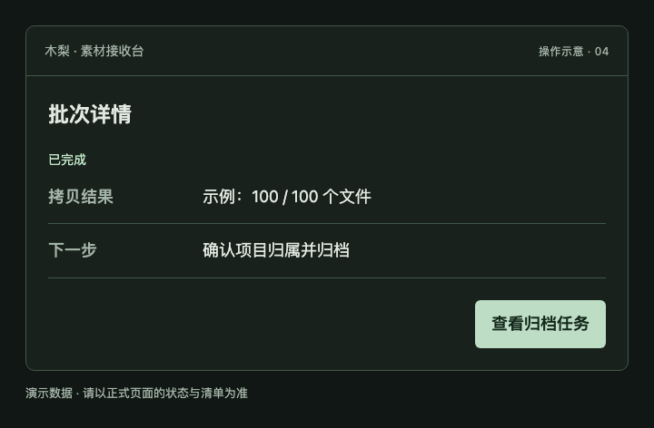
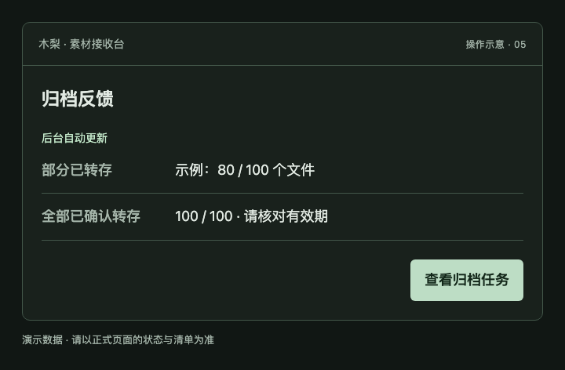
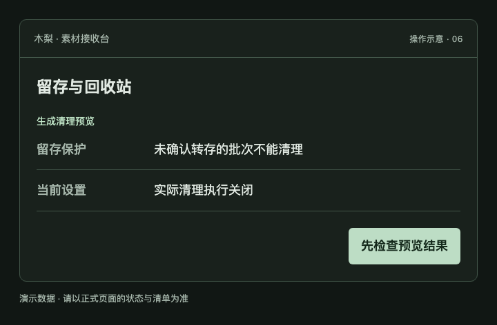

使用帮助 · 图文操作指南
把卡里的素材，稳妥交给 NAS。
先选对来源，再扫描、复制和核验。完成后跳转到归档工作台确认项目；转存结果会在后台回到这里。
帮助在新标签页打开，原来的选择和任务页面仍保留。下面的配图为演示数据。
STEP 01
选择来源
插入相机或读卡器后，进入来源设备，点刷新来源。核对名称和存储区，再点选择此来源。
同一台相机可能同时提供内置存储和 SD 卡，两个存储区应分别选择。

STEP 02
扫描并确认范围
点开始扫描，等待目录和文件数量出现。可在目录树选择本次需要接收的文件夹。
改过目录范围后要重新扫描，确认新的数量和大小再继续。

STEP 03
开始复制，等待核验
点确认范围并开始后，到批次记录查看进度。复制结束后还可能进行核验、来源终检和整理。
传输到 100% 不代表整个批次已完成；以最终状态和文件结果为准。

STEP 04
进入归档工作台
该批次完成后，点查看归档任务进入归档工作台。系统先完成校验交接，再让素材进入可确认的范围。
还没出现素材时，检查该批次是否完成、交接是否仍在进行；不要重复发起复制。

STEP 05
查看转存反馈
归档完成后，打开该批次看后台核对中、部分已转存或全部已确认转存。反馈异步更新，不阻塞归档任务完成。
“全部已确认转存”只覆盖这个批次的文件。整张卡还有未选文件时，不能据此判断整卡可格式化。

STEP 06
留存与清理
需要整理中转空间时，先进入留存与回收站，点生成清理预览，逐项核对批次、保留期限与阻止原因。
当前实际清理执行关闭。系统不会自动格式化卡；历史未同步也不等于已转存。

这些状态，分别是什么意思？
| 状态 | 接下来怎么做 |
|---|---|
| 复制中 / 集中核验中 | 仍在处理，等待最终结果。 |
| 已完成 | 查看文件结果，再进入归档。 |
| 部分已转存 | 仍有本批次文件未确认转存。 |
| 全部已确认转存 | 看覆盖数量、核对时间和有效期。 |
| 需要核对 / 失败 | 查看原因，先核实已完成范围。 |
常见问题
为什么只插一台相机，却显示两个来源？
内置存储和 SD 卡是两个独立存储区。核对名称、容量后分别选择。同一个存储区应该只显示一次；若数量不符，可刷新来源并核对名称。
为什么没有自动标成“全部已确认转存”？
只归档了部分文件时显示“部分已转存”。后台反馈还在核对、已失效或有异常时不会标整批完成；历史任务不会自动补回。
扫描范围改了，为什么不能直接开始？
原来的扫描清单已经不适用于新范围。重新扫描后再点“确认范围并开始”。
什么时候能拔卡或格式化？
先等当前复制、核验和来源终检结束。格式化前还需核对整张卡是否有未接收文件，以及所需副本是否齐全；单个批次已转存不是整卡授权。